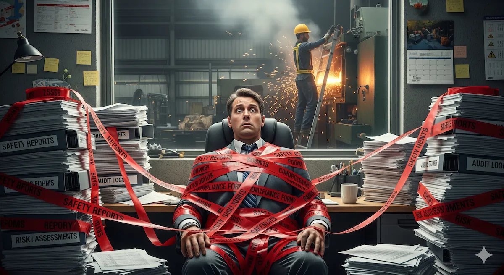

Getting Trapped While Controlling Hazards
May 29, 2025
We all know that some form of human error is involved in most workplace accidents. At first glance, this might suggest that individual workers are the primary problem. Yet the deeper question remains: What if the real issue lies not with the people, but with the systems we design around them? In other words, could the workplace itself be setting employees up to fail?
Consider this scenario: A warehouse introduces a new automated storage and retrieval system to boost efficiency. The system is designed to streamline operations and meets all technical standards. However, within a few weeks, an incident occurs. The cause? The manual override control panel is overly complex, with small, poorly labeled buttons and an unclear display. During a sudden power outage, a worker struggles to identify the correct sequence to safely stop the system and prevent damage.
The hazard—a system malfunction—was anticipated and addressed by including a manual override. But the conditions that made it difficult for the worker to act correctly under pressure were overlooked. These conditions, such as unclear labeling and a complex interface, are what we call error traps. They don’t directly cause incidents but create situations that make it harder for workers to respond safely, increasing the likelihood of errors.
Traditional risk assessments focus on hazards—identifying and controlling sources of harm such as sharp edges, flammable substances, or high voltages. While critical, this approach often overlooks error traps, the subtle, systemic issues that increase the likelihood of human error. These traps can stem from poor design, workplace culture, or organizational pressures, all of which significantly impact safety.
For decades, traditional risk assessments have been the cornerstone of workplace safety programs. Frameworks such as Heinrich’s Accident Pyramid and James Reason’s Swiss Cheese Model have shaped how organizations identify hazards and implement control measures. While these models have been instrumental in reducing workplace accidents, they reveal critical blind spots when applied to modern, dynamic workplaces.
Heinrich’s Accident Pyramid
Heinrich’s Accident Pyramid emphasizes the relationship between near-misses, minor injuries, and major incidents, underscoring the importance of addressing smaller events to prevent larger ones. Although this model provides a foundational perspective on risk reduction, modern critiques highlight its limitations in capturing the complexities of human and systemic interactions (Dekker, 2014).
Two notable shortcomings include:
- Oversimplification of Error Dynamics
- The pyramid assumes a linear relationship between incidents and their causes, focusing on observable hazards rather than the systemic and behavioral factors that lead to errors.
- It fails to account for error traps—hidden conditions within the system that increase the likelihood of human error but may not directly result in visible incidents until they align with other failures.
- Neglect of Systemic Interactions
- Modern workplaces often involve intricate processes where multiple subsystems interact. The pyramid’s static approach does not reflect the dynamic nature of these interactions.
- A small change in one part of the system can create ripple effects elsewhere, a complexity not fully captured by Heinrich’s original model.
While Heinrich’s model remains a valuable tool for raising awareness, its limitations suggest the need for complementary approaches that address the complexities of error-prone conditions.
James Reason’s Swiss Cheese Model
The Swiss Cheese Model offers a more nuanced perspective by highlighting how layers of defense can have vulnerabilities (“holes”) that align to cause incidents. Although this model has become a foundational framework in safety management, critiques point out shortcomings in dynamic and complex systems:
- Focus on Barriers, Not Behaviors
- The model emphasizes aligning barriers to prevent incidents but does not delve deeply into how error traps—such as poorly designed controls or cultural pressures—arise within those barriers.
- Dekker (2014) critiques the model’s static view of barriers, arguing that it oversimplifies how systemic weaknesses evolve and interact with human behavior under pressure.
- Limited Guidance for Proactive Design
- While the Swiss Cheese Model explains failures after they occur, it provides limited actionable insights for proactively identifying and addressing error traps before incidents happen.
- Hollnagel (2014) underscores the need for models that reflect the adaptive nature of systems and human behavior, emphasizing proactive approaches such as Safety-II.
Both Heinrich’s and Reason’s models address observable hazards but often overlook how human interaction with systems can create conditions for error. This gap underscores the need for more comprehensive safety management frameworks—such as Safety-II and Resilience Engineering—to proactively address human factors and systemic vulnerabilities.
Alternative Models and Frameworks for Modern Systems
To address the limitations of traditional models, modern safety frameworks have evolved to better capture the interplay between human factors and systemic conditions:
- Safety-II Framework
- Safety-II shifts the focus from preventing what goes wrong to understanding and enhancing what goes right (Hollnagel, 2014).
- By studying successful operations, Safety-II reveals how workers adapt to complex conditions, identifying potential error traps and opportunities for system improvement.
- Human Factors Analysis and Classification System (HFACS)
- HFACS provides a structured framework for analyzing human errors by categorizing them into levels, such as unsafe acts, preconditions for unsafe acts, and organizational influences (Wiegmann & Shappell, 2003).
- This approach helps organizations see how leadership, workplace culture, or environmental conditions contribute to error traps.
- Resilience Engineering
- Resilience Engineering emphasizes building systems that can adapt to variability and recover from unexpected conditions (Hollnagel, 2011).
- It directly addresses error traps by focusing on how systems and workers can safely adapt under pressure, ensuring that systems can recover and continue operating safely, even in challenging scenarios.
Error Traps Defined
Understanding the difference between hazards and error traps is vital for a comprehensive safety strategy. Traditional risk assessments often focus on hazards—direct sources of harm—while overlooking the systemic conditions that make human errors more likely. Both hazards and error traps contribute to workplace incidents, but they do so in different ways:
Hazard
A hazard is a physical condition or source of potential harm that can directly cause injury, illness, damage, or loss. It is typically inherent to the task, environment, or equipment—consider, for instance, sharp tools, flammable substances, or high voltage machinery. Because a hazard has a direct causal link to harm or damage if not properly controlled, traditional risk assessments often prioritize identifying and eliminating these dangers. Classic examples include a slippery floor that could lead to slips and falls, or high-pressure systems that risk explosion if mishandled.
Error Trap
An error trap is a condition or factor that increases the likelihood of human error during a task, indirectly contributing to workplace risks. It typically stems from human interaction with the task or environment, often arising when procedures are unclear or designs are poorly implemented. Unlike a hazard, which directly causes harm, an error trap serves as a catalyst that makes mistakes more probable, potentially leading to hazardous situations. Examples include confusing control panels with similar buttons but different functions, pressure gauges using different units (e.g., bars and megapascals) that appear the same, or fatigue caused by long working hours—each of which can heighten the risk of errors. Recognizing and mitigating these underlying conditions is a focal point of modern safety analyses, where the goal is to reduce the potential for human error by addressing these systemic pitfalls.
By focusing solely on hazards, organizations might overlook subtle factors—error traps—that set workers up for failure. For instance, a slippery floor (a hazard) becomes far more dangerous if poor lighting makes it difficult to see (an error trap). Addressing hazards and the conditions that increase the likelihood of human error is essential for creating a safer, more resilient workplace.
ABC Analysis: Antecedent-Behavior-Consequence
One effective framework for understanding error traps is ABC Analysis, which stands for Antecedent–Behavior–Consequence. Originally rooted in behavioral psychology, this method is widely recognized in behavioral safety. It provides a structured approach to understanding human actions by examining the relationship between environmental triggers, individual behaviors, and their outcomes.
This method demonstrates how conditions leading up to an event (Antecedents) shape the actions taken by workers (Behavior), culminating in specific outcomes (Consequences). Behavioral psychology emphasizes that human behavior is not random—it is influenced by the environment and shaped by the consequences that follow. By focusing on why workers behave as they do—particularly under pressure—organizations can uncover systemic factors that increase the likelihood of errors.
- Antecedents include any triggers or conditions that influence a person’s decision-making, such as unrealistic production quotas, confusing procedures, or poorly designed work environments. In behavioral psychology, these are seen as stimuli that precede behavior, creating the context for action.
- Behavior reflects how workers respond to those conditions. For example, under stress or unclear expectations, workers may rush tasks, skip safety checks, or improvise solutions. From a psychological perspective, these behaviors are often influenced by the immediate context and previous experiences with similar situations.
- Consequences can range from near-misses and minor injuries to major incidents, ultimately revealing the weaknesses in a system that allowed errors to occur. Behavioral psychology emphasizes that consequences—whether positive (e.g., rewards for speed) or negative (e.g., injuries)—reinforce behaviors and can perpetuate unsafe practices if not addressed.
By applying the principles of behavioral psychology, organizations can use the ABC framework to address the root causes of unsafe behavior. For example, focusing on antecedents—such as reducing unrealistic expectations or improving training—can break the cycle of unsafe actions and create safer work environments. Additionally, positive reinforcement, such as recognizing safe practices, can help encourage and sustain desirable behaviors.
Improper Scaffolding Assembly: Closer Look
On construction sites, tight project deadlines and inconsistent supervision frequently serve as powerful antecedents that nudge crews to take shortcuts. Workers, feeling pressure to complete tasks quickly, may skip key steps or ignore recommended protocols in order to meet daily targets. Over time, these seemingly minor deviations become habitual—turning into a recognized way of doing the job.
Faced with these demands, the behavior typically involves hastily assembling scaffolding without consistently following official guidelines or using the proper components in the correct sequence. In some cases, workers may reuse worn parts, fail to secure certain sections, or overlook vital safety checks. To an individual worker aiming to save time, these decisions might appear small; however, they compound the overall risk on the site.
The consequences of these behaviors can be severe. Even one improperly installed section of scaffolding can compromise the structure, leading to instability and increasing the likelihood of collapses. Such collapses can not only cause immediate injuries to workers on the scaffolding but also put other personnel and pedestrians at risk. Moreover, once shortcuts become normalized, it becomes much harter to revert to safe practices—further embedding these risk factors into daily operations.
Fortunately, organizations can mitigate these outcomes by addressing the antecedents first. For instance, standardized scaffolding checklists reduce confusion and ensure every step is followed consistently. Uniform training gives all crews the same baseline knowledge, minimizing discrepancies across different teams or shifts. Additionally, pre-job safety briefings allow supervisors to reinforce proper assembly procedures, remind workers of the criticality of each step, and correct any shortcuts immediately. When leaders take an active role—visibly adhering to and promoting these protocols—workers see that safety takes precedence over rushed deadlines, cultivating a workplace culture where safe practices are the norm rather than an afterthought.
From Hazard Management to System Resilience
Research consistently highlights the significant role of human factors in workplace safety. Studies found that higher levels of risk avoidance and a stronger sense of control among workers significantly reduced the likelihood of near-misses, underscoring the importance of addressing systemic influences on behavior (Haas & Yorio, 2019).
Yet organizations often fall into systemic blind spots, where the very conditions that foster errors remain overlooked. When too much focus is placed on controlling tangible hazards—like securing heavy machinery or installing protective barriers—factors such as work culture, leadership communication, and workflow design may go unnoticed. These overlooked elements can evolve into error traps, creating environments where even well-intentioned, capable workers make mistakes due to unclear expectations, rushed tasks, or poorly designed procedures.
Systemic Blind Spots
Traditional risk assessments sometimes rely too heavily on the person approach to safety, where mistakes are viewed as personal failings. This perspective ignores the broader organizational factors that create or amplify error traps. For instance, a factory might have impeccable machine guarding (addressing hazards) yet maintain a high-pressure climate that discourages employees from reporting near-misses. In this scenario, workers feel compelled to conceal errors, which—if left unresolved—leads to repeated oversights or unsafe shortcuts. Over time, these “normalized” shortcuts form a hidden error trap that undermines even the best hazard controls.
Person vs. System Approach
Modern safety thinking recognizes that errors typically emerge from systemic issues rather than individual negligence. By examining leadership styles, work processes, and communication channels, organizations can identify how conflicting priorities or poorly designed systems contribute to human error. This system approach complements and enhances traditional hazard management. For example:
- Person Approach: A worker is reprimanded for repeatedly assembling machine parts incorrectly.
- System Approach: The organization reevaluates the assembly instructions, finds they are overly complex, and reworks them into a user-friendly format. They also schedule short, consistent training sessions to confirm understanding—thereby reducing the chance of future errors and alleviating a key error trap.
Building System Resilience
To move beyond the person approach, organizations increasingly adopt system resilience strategies. These include:
- Embedding Human Factors: Adjust workflows to align with how people realistically perform under time pressure or fatigue. For example, using concise checklists instead of lengthy manuals helps workers focus on critical steps.
- Fostering Psychological Safety: Encourage open dialogue about mistakes or near-misses without blame. When employees trust they won’t be punished for reporting concerns, hidden error traps emerge sooner and can be addressed proactively.
Example of Handling Chemical Substances
Imagine a chemical processing plant that stores various reactive substances. The plant invests in robust hazard controls—like well-maintained ventilation systems and sealed containers—to prevent leaks or explosions. However, the systemic blind spot lies in the ambiguity of labeling and complex storage protocols that change every few months due to supply chain fluctuations. Workers struggle to keep track of different substance locations, especially if they lack real-time updates or consistent signage. Before long, an employee misplaces a chemical container, creating a serious potential for cross-contamination—an error trap formed by poor procedural design and a dynamic inventory system.
By embedding human factors, the plant can simplify labeling schemes and install digital dashboards that clearly indicate substance locations. At the same time, fostering psychological safety encourages workers to report any confusion with labeling changes, ensuring that management can quickly revise and clarify procedures. Rather than relying solely on physical hazard controls (e.g., the quality of the containers), the plant addresses the root cause—a complex, often-changing system that leaves employees vulnerable to mixing errors.
Modern Solutions to Address Error Traps
Having highlighted the shift from hazard management to system resilience, it becomes clear that organizations need holistic approaches to address error traps—those hidden conditions that make human error more likely. The following modern strategies illustrate how safety professionals can tackle these deeper, systemic issues rather than relying solely on traditional hazard controls.
- Shift to a System Approach
Moving beyond the person approach involves system-level changes that reduce the likelihood of human error. By adopting human-centered design, organizations can ensure that work processes, equipment layouts, and instructions align with real-world user needs.
- Standardize control panel layouts across machines so workers see a consistent “language” of controls.
- Use intuitive color-coding—for example, red for emergency stops and green for normal operations—or add tactile feedback for critical functions. Such measures minimize confusion, particularly under time pressure.
These design decisions directly target error traps rooted in confusing interfaces or inconsistent labeling, thereby enhancing overall system resilience.
- Incorporating Human Factors
A system approach must also integrate human factors, recognizing the practical realities of worker behavior, cognition, and physical limitations.
- Safety Critical Task Analysis (SCTA): Breaking down tasks into discrete steps reveals where errors are most likely to happen. Incorporating fail-safes or timely reminders can preempt mistakes. For instance, maintenance checklists prompt workers to confirm each step instead of relying solely on memory.
- Performance Influencing Factors (PIFs): Consider how fatigue, time pressure, and environmental distractions affect performance. Adjusting shift schedules to reduce fatigue or providing buffers between high-pressure tasks can significantly diminish the likelihood of errors.
By deliberately designing tasks and workflows around human capabilities, organizations minimize conditions that trap employees into unsafe actions.
- Leadership and Culture
Establishing a strong safety culture starts with leadership. When supervisors and managers demonstrate an unwavering commitment to safety, workers feel empowered to speak up about near-misses or systemic problems. This open dialogue is crucial for identifying and eliminating error traps before they lead to incidents.
- Workers must trust that flagging near-misses or voicing concerns will prompt constructive improvements, not punishment.
- Train supervisors to model safe behaviors, reinforcing the idea that risk mitigation is a shared responsibility.
- Regularly gather feedback via safety briefings or anonymous surveys to identify hidden error traps quickly.
Cultivating psychological safety aligns seamlessly with a system approach, ensuring organizations uncover the root causes of human errors rather than penalizing individuals for honest mistakes.
- Technology Integration
Advances in technology offer powerful tools to reduce error traps by guiding, automating, or monitoring tasks in real time.
- Augmented Reality (AR): AR solutions provide step-by-step guidance in a worker’s field of view, reducing reliance on memory. For instance, AR glasses highlight assembly steps or maintenance checkpoints, making it harder to skip critical tasks.
- Automation: Automating repetitive or high-risk tasks minimizes the potential for human error. From robotic material handling on construction sites to fully automated assembly lines, these solutions free workers to focus on tasks that require judgment and problem-solving—areas where human input is most valuable.
Conclusion
Error traps are the silent saboteurs of workplace safety. They hide within systems, processes, and cultures, quietly increasing the likelihood of human error. In modern workplaces, addressing hazards alone is no longer sufficient—we must also tackle the behavioral and systemic factors that enable those hazards to manifest.
A system approach that considers both hazards and error traps offers a more robust safety framework. By standardizing designs, embedding human factors into risk assessments, and cultivating a culture of psychological safety, organizations can uncover and address hidden vulnerabilities. This proactive strategy not only protects workers but also enhances efficiency and resilience.
References
- Haas, E. J., & Yorio, P. L. (2019). The role of risk avoidance and locus of control in workers’ near miss experiences: Implications for improving safety management systems. Journal of Loss Prevention in the Process Industries, 59, 91–99.
- Dekker, S. (2014). Safety differently: Human factors for a new era. CRC Press.
- Hollnagel, E. (2014). Safety-I and Safety-II: The Past and Future of Safety Management. CRC Press.
- Reason, J. (1990). Human Error. Cambridge University Press.
- Hollnagel, E. (2011). Resilience Engineering in Practice: A Guidebook. CRC Press.
- Wiegmann, D. A., & Shappell, S. A. (2003). A Human Error Approach to Aviation Accident Analysis: The Human Factors Analysis and Classification System. Ashgate.